使用 Eclipse IDE 创建第一个 Servlet 应用
原文：https://www.studytonight.com/servlet/creating-servlet-in-eclipse.php
Eclipse IDE 是业界最流行的 Java IDE。它是由一个开源社区开发的，可以从免费下载
使用 Eclipse IDE 创建 Servlet 的步骤
要在 Eclipse IDE 中创建一个 Servlet 应用，您需要遵循以下步骤:
Goto File -> New -> Dynamic Web Project
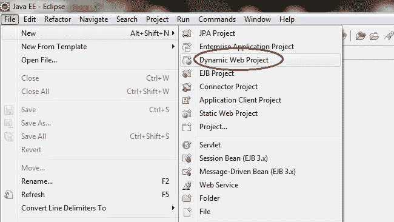
Give a Name to your Project and click Next
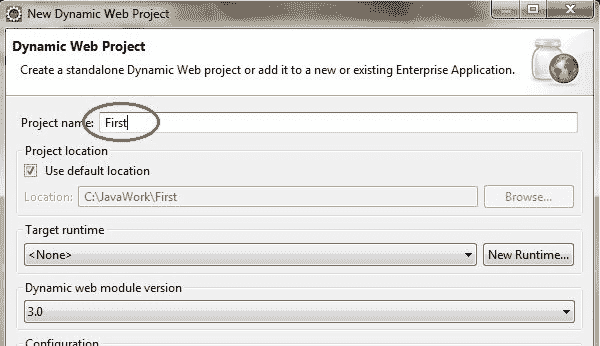
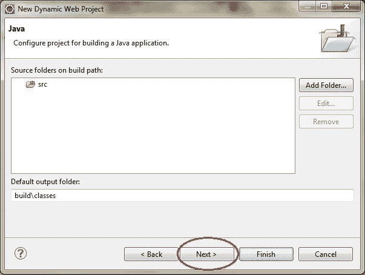
Check Generate web.xml Deployment Descriptor and click Finish
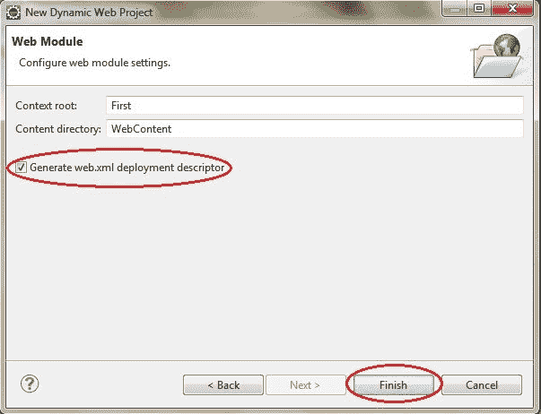
Now, the complete directory structure of your Project will be automatically created by Eclipse IDE.
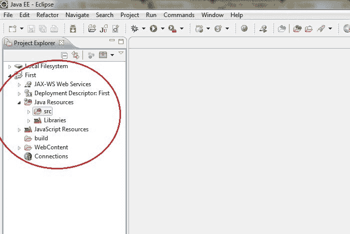
Click on First project, go to Java Resources -> src. Right click on src select New -> Servlet
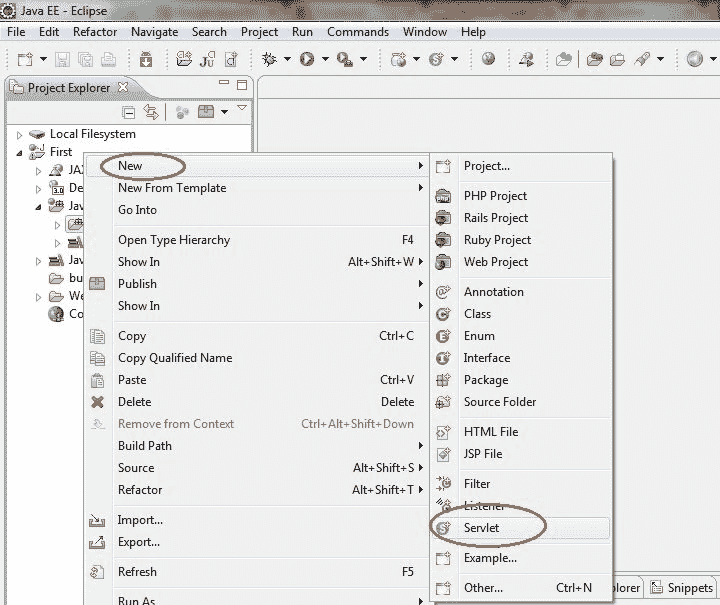
Give Servlet class name and click Next
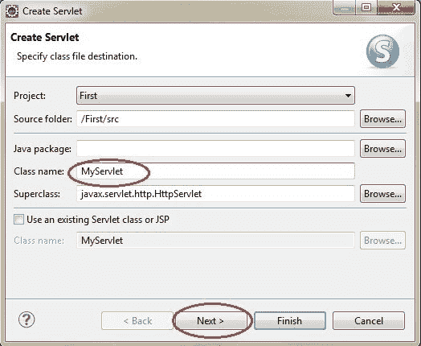
Give your Servlet class a Nmae of your choice.
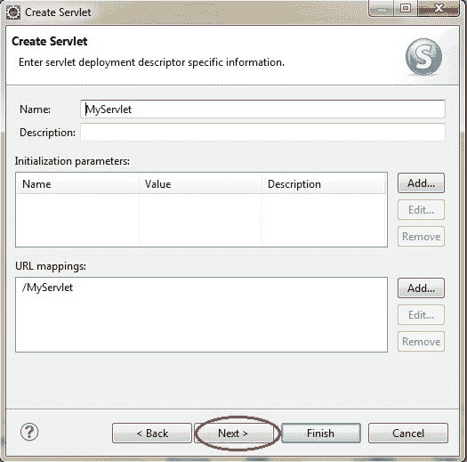
Leave everything else to default and click Finish
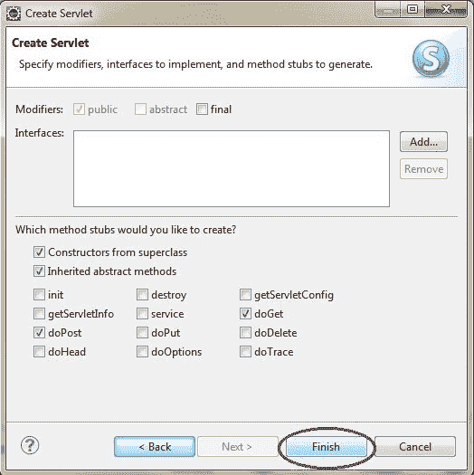
Now your Servlet is created, write some code inside it. You can take reference from the code in the picture below.
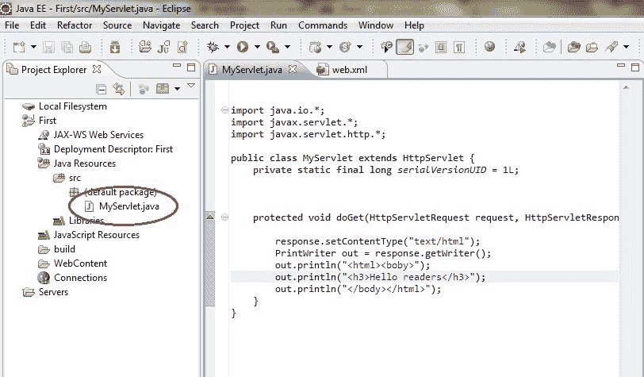
Add servlet-api.jar JAR file to your project. Click on Libraries, right click on Web App Libraries select Build Path -> Configure Build Path
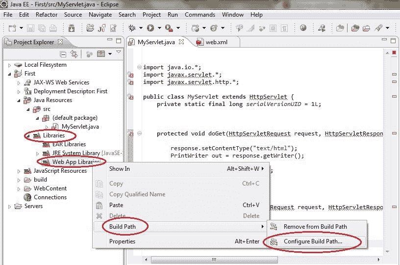
Click on Add External JARs
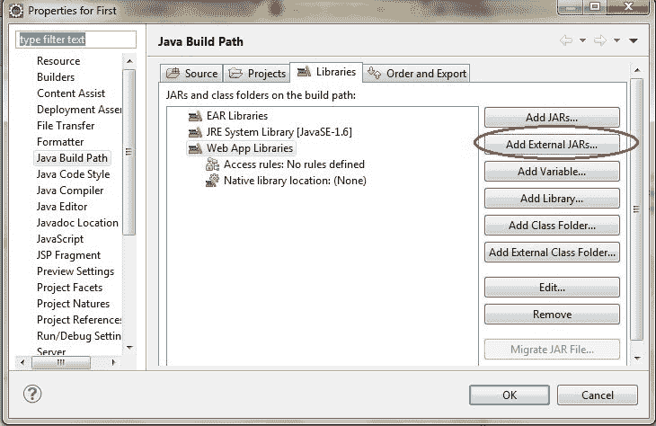
- 这个 JAR 现在被添加到项目的构建路径中。
Select servlet-api.jar from Apache Tomcat Directory
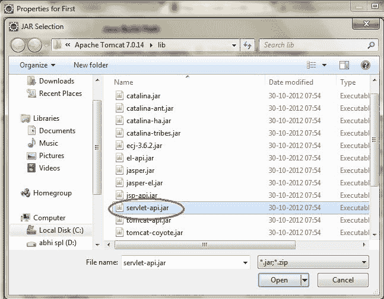
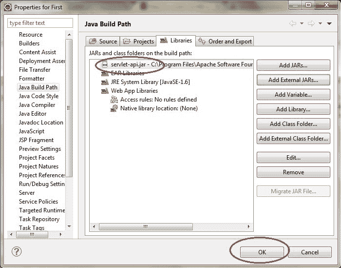
Now all you have to do is Start the server and run the application.
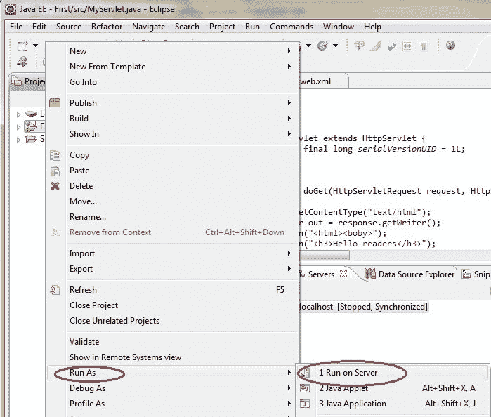
Eclipse 上的 Servlet 响应示例
步骤 1:在 eclipse 上创建一个动态项目。

第二步:现在创建一个 HTML 文件。

并写出下面的代码。
<!DOCTYPE html>
<html>
<head>
<meta charset="ISO-8859-1">
<title>Insert title here</title>
</head>
<body>
<form action="display" method="get">
Enter User name: <input type="text" name="val1">
Enter Password: <input type="text" name="val2">
<input type="submit" value="login">
</form>
</body>
</html>
步骤 3:现在在 web.xml 文件中添加下面的代码。
web.xml 文件是一个部署描述符。这里有所有的配置。
<?xml version="1.0" encoding="UTF-8"?>
<web-app xmlns:xsi="http://www.w3.org/2001/XMLSchema-instance" xsi:schemaLocation="http://xmlns.jcp.org/xml/ns/javaee http://xmlns.jcp.org/xml/ns/javaee/web-app_4_0.xsd" id="WebApp_ID" version="4.0">
<servlet>
<servlet-name>abc3</servlet-name>
<servlet-class>com.app.studytonight.demo4</servlet-class>
</servlet>
<servlet-mapping>
<servlet-name>abc3</servlet-name>
<url-pattern>/display</url-pattern>
</servlet-mapping>
</web-app>
步骤 4:现在接下来创建一个 servlet。为此创建一个类。给出包名和类名。


在类文件中添加下面的代码。
演示 4.java
package com.app.studytonight;
import javax.servlet.http.*;
import javax.servlet.*;
import java.io.*;
public class demo4 extends HttpServlet{
public void doGet(HttpServletRequest req,HttpServletResponse res)
throws ServletException,IOException
{
res.setContentType("text/html");
PrintWriter pwriter=res.getWriter();
String uname=req.getParameter("val1");
String pw=req.getParameter("val2");
pwriter.println("User Details Page:");
pwriter.println("Hello "+uname);
pwriter.println("Your Password is **"+pw+"**");
pwriter.close();
}
}
现在，运行代码。